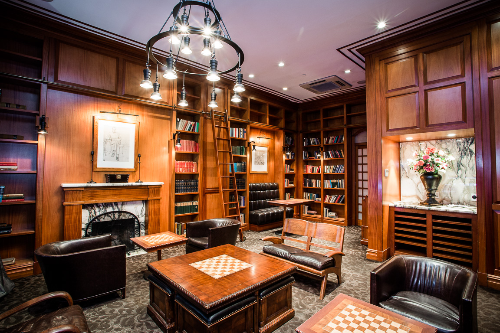

An orphanage used to stand on the land that now holds the historic and beautifully eerie Mansfield Hotel. Constructed in the popular Beaux Arts style, the property was originally built as a fancy hostel-type hotel for New York's elite. It's hard to believe there isn't at least one lingering orphan spirit or bachelor roaming the halls, searching for his last gin martini. In 2015, a TripAdvisor reviewer stated, "And it turns out that it's extremely haunted and we had tons of paranormal activity in our room, but the staff isn't allowed to talk about it."
"We had paranormal activity in our room, but the staff isn't allowed to talk about it."
_____________________________________________________